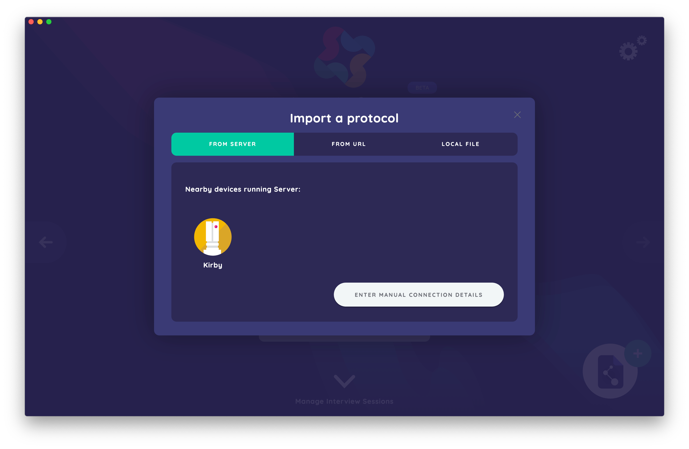
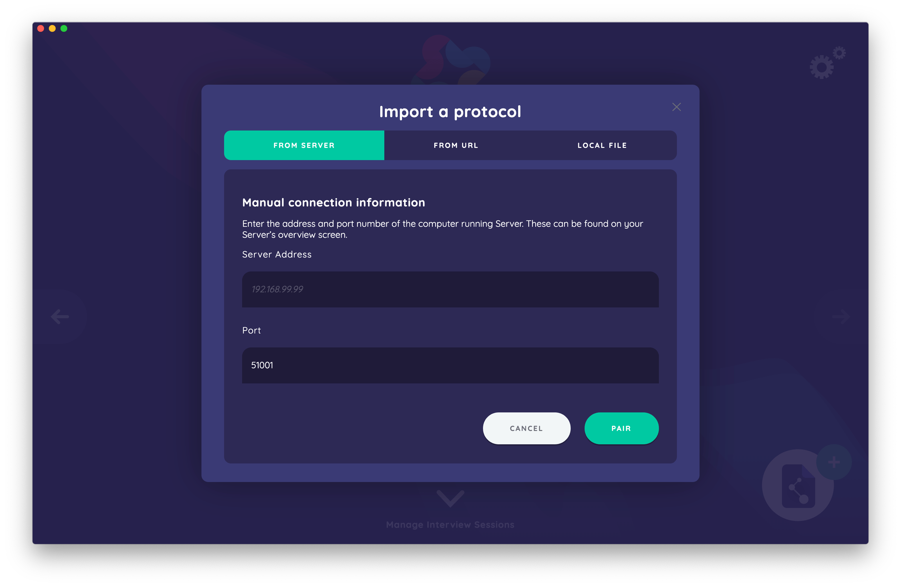
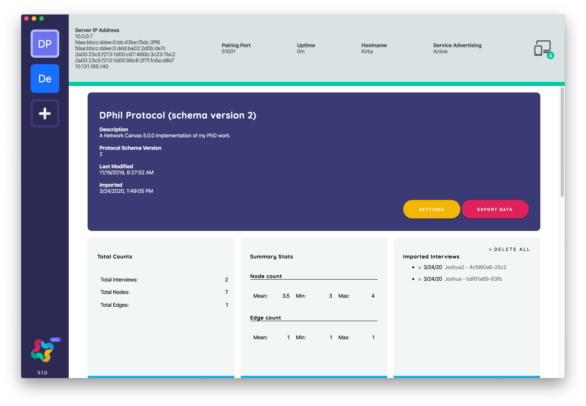
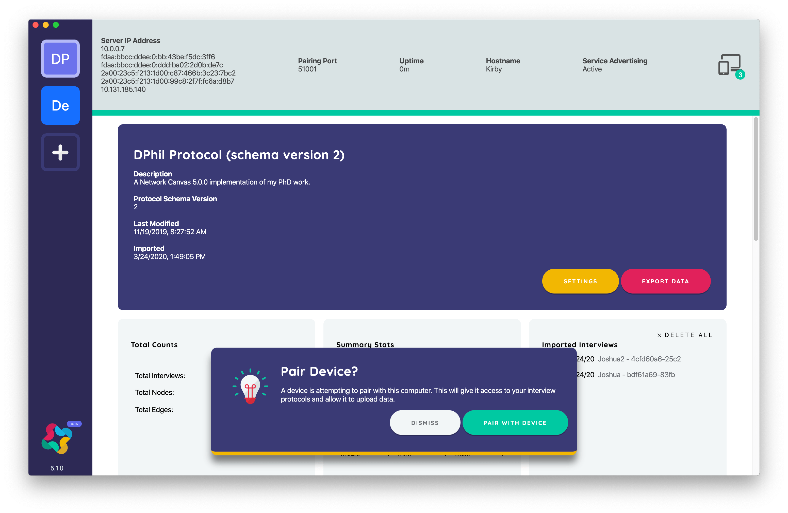
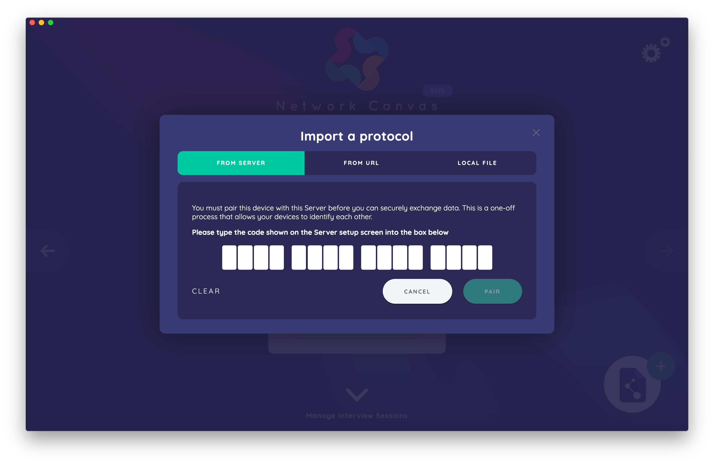
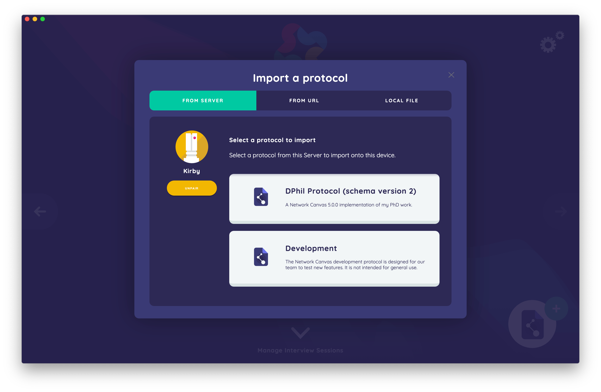

Pairing Interviewer Devices with Server
Table of Contents
Connecting to Server
Automatic Discovery
Pairing can be accomplished manually or via the automatic discovery feature, which works using a technology called mDNS (also known as ZeroConf and Bonjour).
If you are running macOS, the technology needed for automatic discovery is already installed. For Windows users, you will have been prompted during the installation to install the additional components required. You can reinstall them at any time by reinstalling Interviewer.
Using this technology, Interviewer clients are able to “see” instances of Network Canvas Server that are running on the same local area network (LAN).

Interviewer will automatically attempt to locate instances of Server running on the same network, and any that are available to pair with will be visible by scrolling to the bottom of the Interviewer’s start screen, in the “Server Status” section. Ensure that the instance of Server you wish to pair with is open and connected to the same network as the Interviewer client so they can “see” each other.
Each instance of Server found is displayed as a card, with a hostname as a label. Click the instance of Server you wish to begin pairing with.
Manual Connection Details
If you cannot utilize automatic discovery (either because it fails or is unavailable), you can also enter manual connection details for Server. To do this, follow the same steps as above (scroll to the bottom of the Interviewer start screen, to the “Server Status” section). Click the white button in the bottom right hand corner (“enter manual connection details”).

In the manual connection dialog, you may enter in the IP address and port number of the Server with which you wish to pair. The Server IP address and port number can be found by clicking on the Network Status icon on the top right of the main interface in Server.


The Pairing Process
Whether you use automatic or manual discovery to locate Server, the pairing process itself will be the same. Once you have attempted to connect to Server, and pairing request will be sent.

To accept this request, click the “pair with device” button on the dialog that appears within Server. As soon as you accept the pairing request, a new dialog will open in Server with a unique sixteen letter pairing code.
A dialog will then appear in Interviewer on the client device where you will enter the code provided by Server into the sixteen empty fields. Then click the green “pair” button to establish pairing between the devices.

Once Interviewer and Server are securely paired, protocols can not be imported from the Server, and Interviewer will enable the “Import from Server” button in the Protocols section.

Clicking on “Import From Server” will display any protocols that have been uploaded to Server in the Interviewer client. Selecting one of these protocols from the list will install it.

Troubleshooting
If you cannot reach Server using automatic or manual discovery following the steps above, please try the following:
- Make sure Server is running.
- Ensure both Server and Interviewer are connected to the same local network. If you wish to connect over the internet, ensure you have configured a VPN or similar.
- Restart Server and Interviewer on their respective devices. Note: restarting will not drop data.
- Contact your network administrator or refer to the details of the error message for further troubleshooting tips. Note: Server uses the Bonjour protocol and requires multicast DNS packets to be able to pass through the network.
- As a final step, please contact us by emailing
info@networkcanvas.comwith details of any error messages you may be receiving.